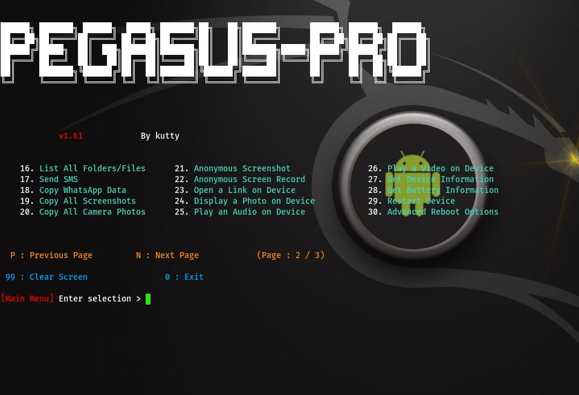
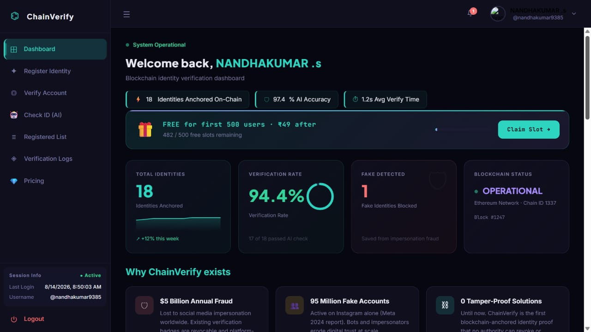
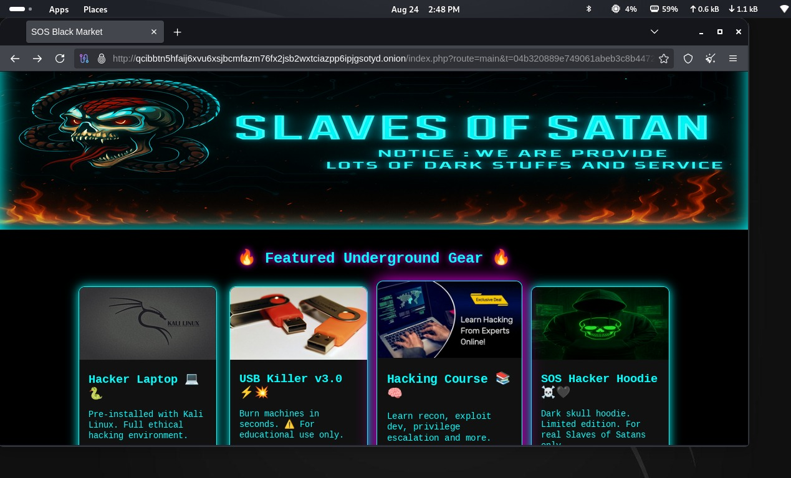
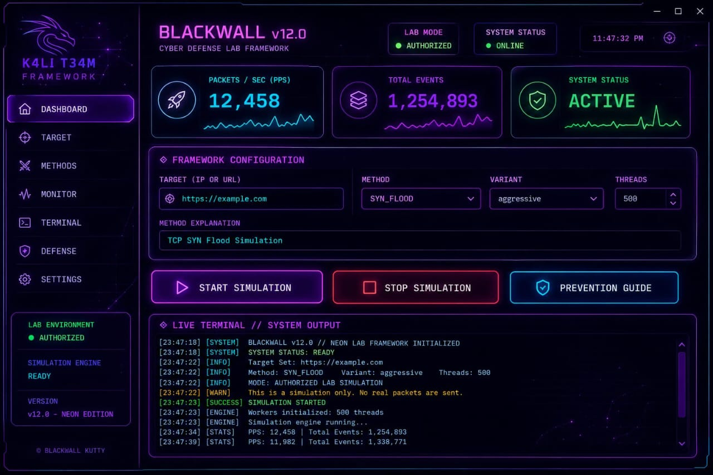
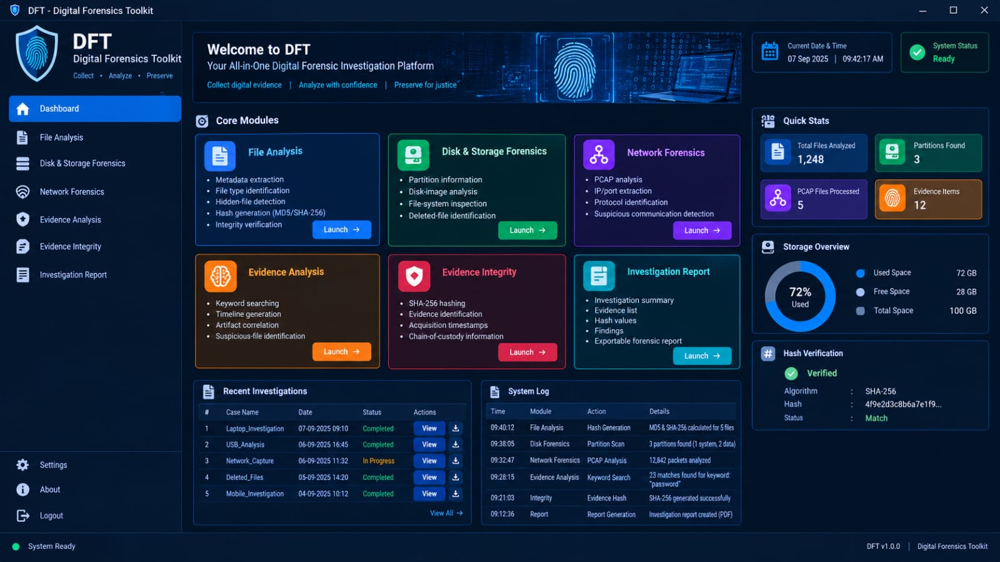
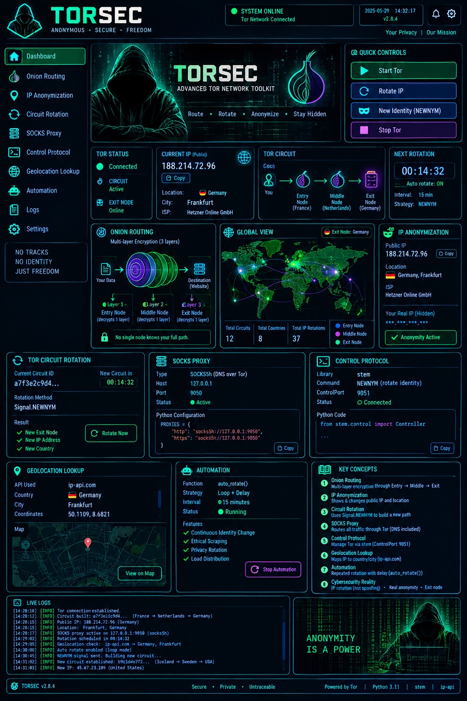

Cybersecurity
Ethical HackingPenetration TestingOffensive SecurityWeb SecurityReconnaissanceSecurity Testing
BE CYBER SECURITY • SECURITY RESEARCH • DEVELOPMENT
CYBER SECURITY STUDENT & SECURITY-FOCUSED BUILDER
I build practical security projects across ethical hacking, offensive security, digital forensics, privacy engineering, web security and security-aware software development. My focus is turning cybersecurity concepts into working, demonstrable tools and applications.
Focused on understanding attack surfaces, identifying weaknesses, building defensive thinking and learning through hands-on security work.
From Android security tooling to forensics and ML-based detection concepts, I prefer learning by building practical systems.
Building a strong foundation for a professional career in cybersecurity, ethical hacking, penetration testing and offensive security.
01 / ABOUT ME
I am Santhosh Kumar A., a BE Cyber Security student with a practical interest in ethical hacking, penetration testing, offensive security, web application security, digital forensics and security tooling.
My approach combines security research with development: understand the technology, map the attack surface, experiment responsibly in authorized environments, document the result and turn the learning into a usable project.
I completed a Diploma in Computer Science and progressed into engineering through direct entry. I enjoy working with Linux environments, Python-based security tooling, web technologies and security-focused application architectures.
02 / CAPABILITIES
Technologies and areas I work with while learning, developing and experimenting in authorized environments.
03 / SELECTED WORK
A collection of security-focused and software projects reflecting my interests across offensive security, forensics, privacy and intelligent detection.

Android-focused offensive security tooling developed as an educational/lab project. The project explores mobile security concepts, controlled access workflows and security testing architecture.

A security and ML concept combining React, Python, MongoDB, blockchain and XGBoost/SHAP-oriented analysis to identify suspicious or fake profile behavior.

A Tor-based web application project using Nginx and PHP, with attention to routing, authentication, session handling, security controls, error handling and server configuration.

A controlled-load testing project created to study traffic behavior, server resilience and defensive monitoring. Intended for systems where testing is explicitly authorized.

A PySide6 GUI-oriented digital forensics toolkit concept designed to bring forensic workflows into a practical desktop interface with a security-focused visual design.

A Python privacy-engineering framework concept using Tor, Stem and SOCKS5 to explore controlled identity rotation and privacy-aware network workflows.
04 / CREDENTIALS
Certificate cards are ready for your actual certificate images. Replace the placeholders with your verified credentials without changing the UI.

Issuer • Course / Certification Name • Issue Date

Issuer • Course / Certification Name • Issue Date

Issuer • Course / Certification Name • Issue Date

Issuer • Course / Certification Name • Issue Date
05 / EDUCATION
Sri Sai Ranganathan Engineering College
Cybersecurity-focused engineering studies with a practical interest in ethical hacking, security testing, Linux and security development.
In Sri RamaKrishna Polytechnic College Completed Diploma in Computer Science before entering engineering through direct second-year entry.
CGPA: 8.21 • Higher Secondary: 450 / 600 • Secondary: 316 / 500
06 / SECURITY MINDSET
Cybersecurity is more than running tools. I am interested in understanding systems deeply enough to identify weaknesses, validate them responsibly and improve the security of the software around them.
Security testing is performed only on systems and environments where permission is available.
Projects turn concepts into repeatable workflows, interfaces, experiments and documentation.
Continuously strengthening foundations across networking, Linux, web security, application security and offensive security.
07 / CONTACT
Open to cybersecurity opportunities, internships, project collaboration and professional connections.